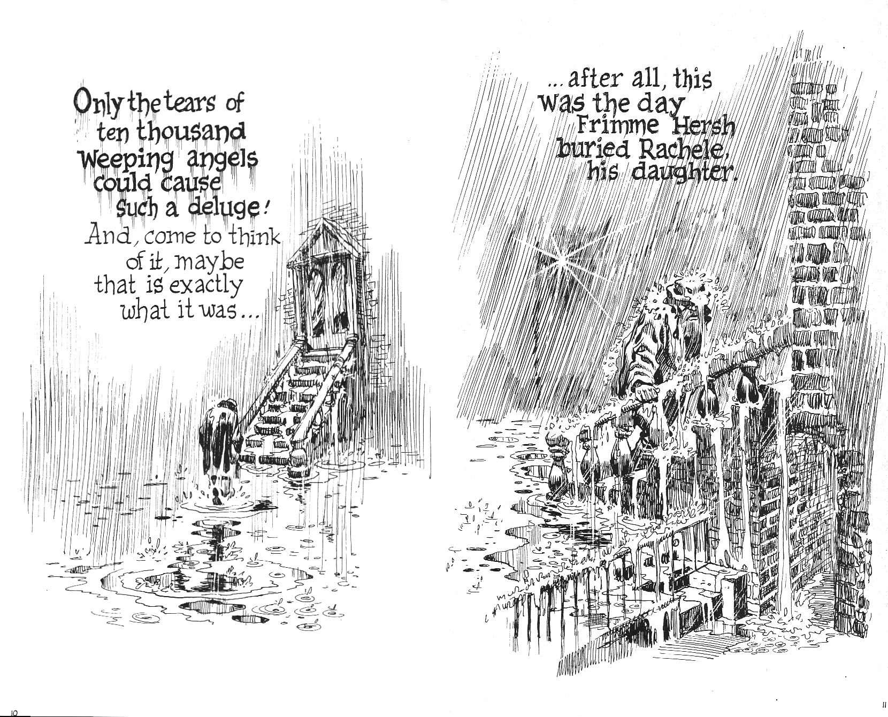
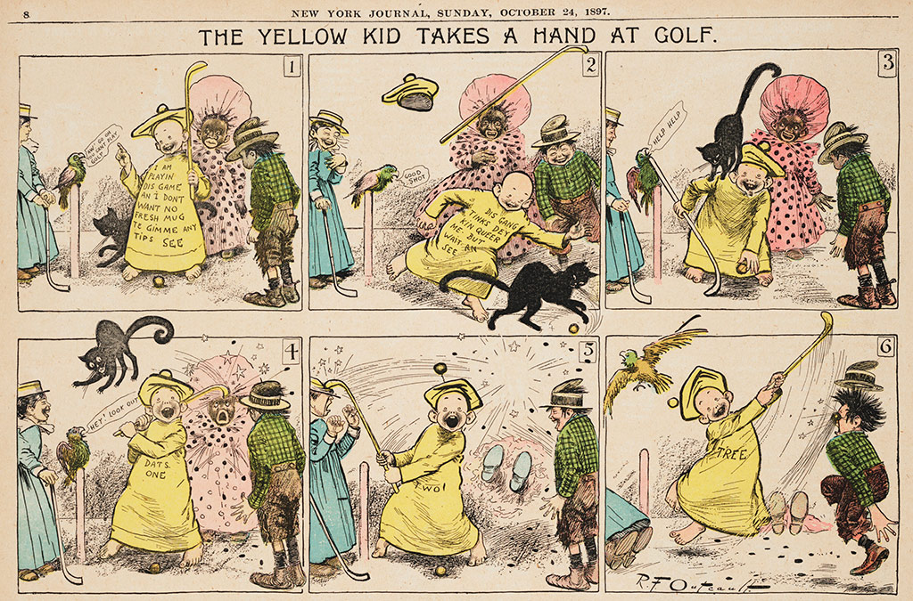
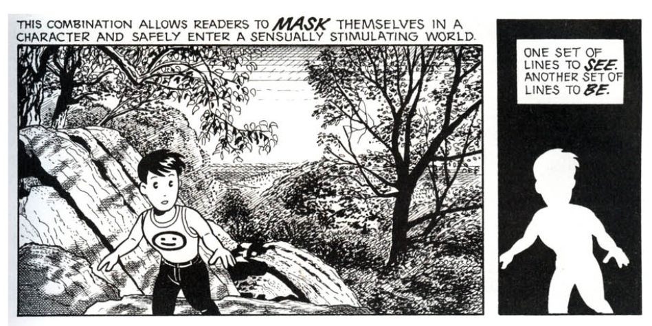
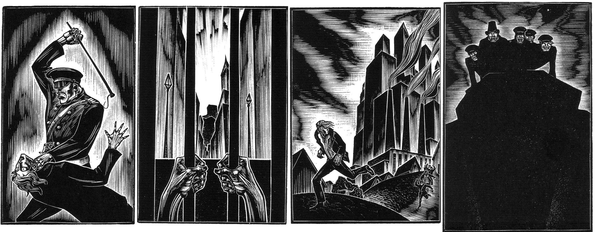
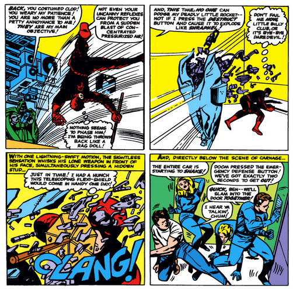
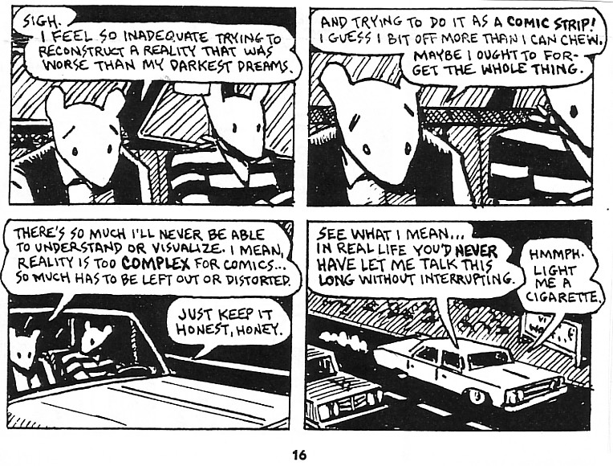
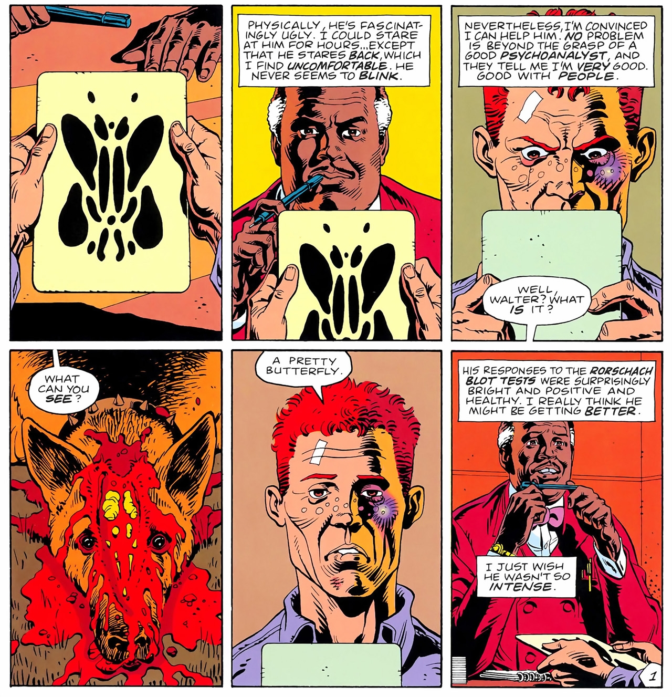
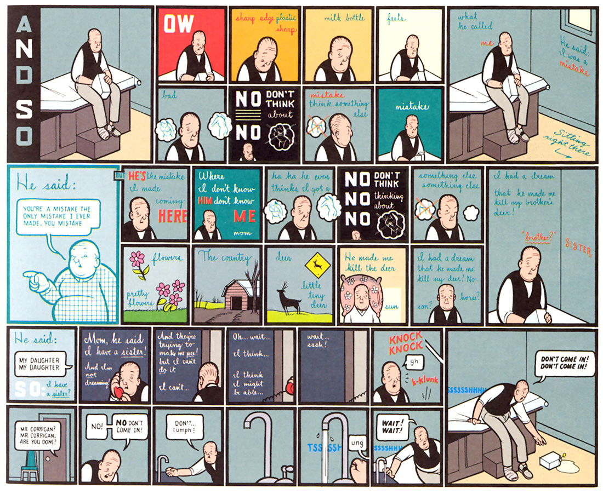
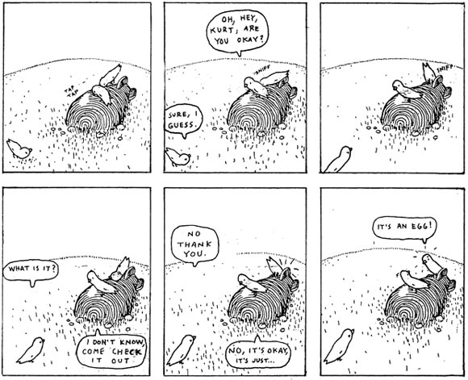

The term sequential art is coined by Will Eisner in 1985. Eisner defines the form as combining four elements: design, drawing, cartooning and writing.
Scott McCloud's Understanding Comics offers another definition and breaks down the medium.

Eisner's Contract with God is often called the first graphic novel.
Examples of sequential images have existed since the beginning of recorded history.
Magura Cave in Bulgaria 8000 to 4000 years ago. Painted with bat poop apparently.
Book of the Dead of Ani. Egypt, c. 1275 B
Trajan's Column, 113 AD
Mayan Codices, folding books with hundreds of years of history, mostly destroyed in 1562 by Spanish.
Bayeux Tapestry, England 1066.
In Japan, in 12th and 13th century, drawings done on scrolls with "animal-person caricatures."
William Hogarth, The Rake's Progress, 1735, moral tales with illustrations and writing, first copyright laws for visual images after copies were made.
The first example of what we now consider comics or sequential art is considered Rodolphe Töpffer, a swiss artist. He created visual panels, combining writing and drawings, beginning in the 1830s.
In 1870, Eadweard Muybridge records motion with multiple cameras. People are beginning to think in visual sequences.
Comics explode in newspapers at the turn of the 20th century. George Herriman, best known for Krazy Kat which ran from 1913 to 1944, is an early influential practitioner who produced multiple strips.

The Yellow Kid is the first regular newspaper strip from 1895 to 1898, was printed on full color pages in the Sunday papers. Although featuring a cartoonish toddler as the protagonist, the strip was based on social commentary on class and race in New York City.
Hurrah for Japan!! One Hundred Victories. One Hundred Laughs. 1904.
Political cartoons are big in the US and Japan. Japanese cartoonist innovate with woodblock cuts and other printing techniques.
Later, in the 1950s, Osamu Tezuka and others pioneer Manga, which becomes influential on modern western comics and animation.
Sanmao, 1936.
In China, Manhua gains popularity as well.
Throughout the 20th century, the art of comics moves from realistic renderings influenced by earlier art practices to simple iconic renderings that are more adaptable and able to convey action and emotion more easily.


God's Man, 1929. Lynd Ward.
A Passionate Journey, 1919. Frans Masereel.

Fantastic Four #40, 1961 by Stan Lee and Jack Kirby.
In the US, superhero comic books become popular starting in the 1930s and 40s, eventually leading to D.C. and Marvel comics and the superheroes we know today such as Superman, Batman and Spiderman.

Meanwhile, some artists are creating "serious" comics, such as Art Spiegelman's Maus, which was written between 1980 and 1991 and brought independent, or underground, comics to the mainstream. It is retroactively rebranded as a graphic novel.

Alan Moore and Dave Gibbons publish Watchmen in 1985, which satirizes the superhero genre, cold war politics and makes comics more "serious".

Jimmy Corrigan, the Smartest Kid on Earth, by Chris Ware, collected in 2000, is considered a modern masterpiece of comics.

Big Questions, by Anders Nilsen, collected in 2011. Independent comics and "graphic novels" blow up in 21st century, while superheroes become big movie franchises and manga and anime are very popular.
Xu Bing, Book from the Ground: From Point-to-Point (2012).
Other types of sequential images and icons, (ie emoji's) are popular in mainstream culture, art and elsewhere.